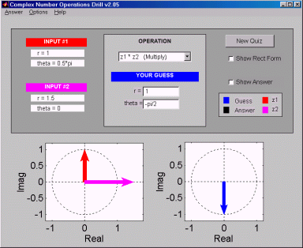

|  |
Zdrill is a program that helps master
the basic understanding of complex numbers and enhances the ability to quickly
carry out fundamental mathematical operations on them.
Features:
- A variety of quizzes from two difficulty levels are generated for the user to
guess the answers to.
- Quiz vectors are plotted and can be displayed in both rectangular and polar form.
- The user's guess is plotted and can be updated immediately each time it is
changed.
- The answer to the quiz is hidden until the student wishes to reveal it by
checking the Show Answer box.
|